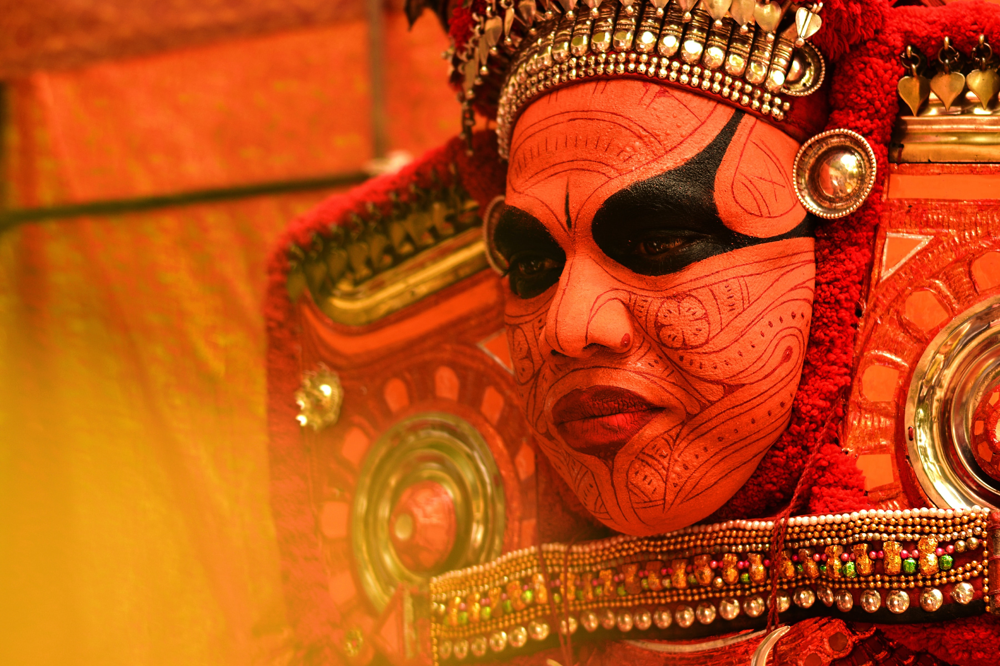
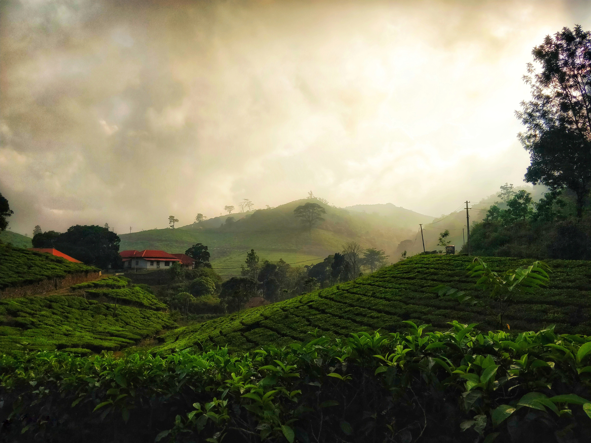

Theyyam
Theyyam is a famous ritual art form that originated in North Kerala which brings to life the great stories of our State

Kerala Houseboat
The Kerala houseboat is a modified kettuvallam, the large boat of yesteryears. In Malayalam, 'kettu' means to tie and 'vallom' means boat. These boats were held together with rope and hence the name.

Explore Munnar
Known for its evergreen tea plantations, the hills of Munnar with their rolling beauty and charm can cast a magical spell on the visitors!